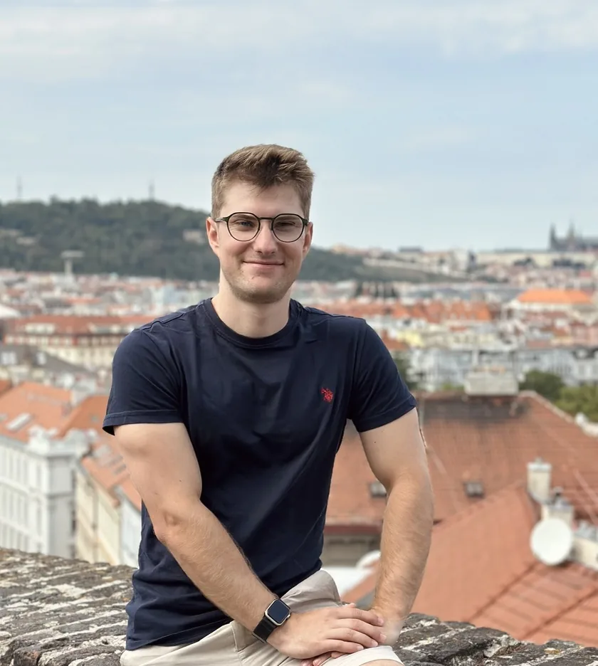
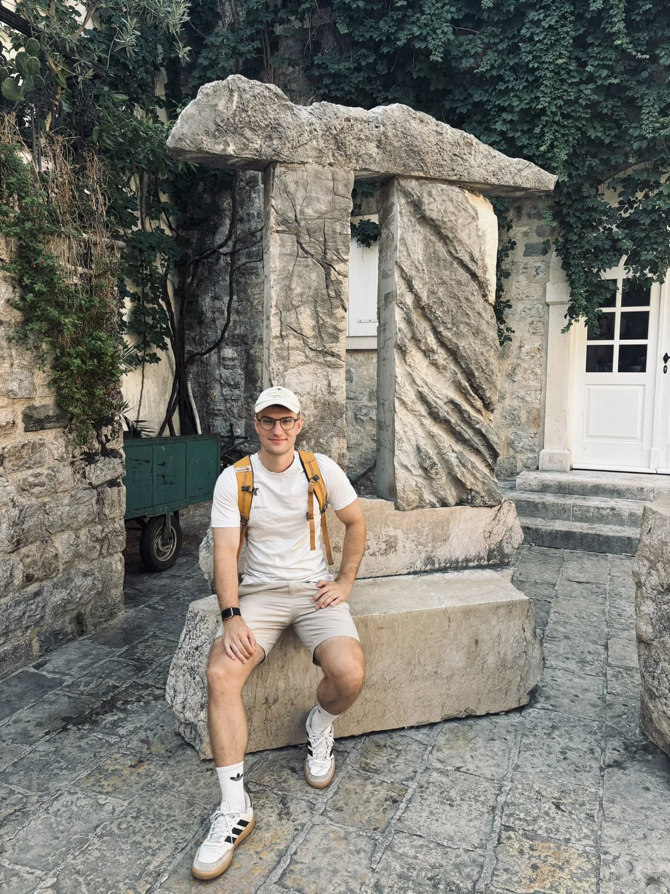

<style>
.about-shared {
    max-width: min(1040px, calc(100% - 32px));
    margin: 22px auto;
    padding: 0;
}

.about-shared__layout {
    display: grid;
    grid-template-columns: minmax(220px, 300px) minmax(0, 1fr);
    gap: 16px;
    align-items: stretch;
}

.about-shared__media {
    min-width: 0;
}

.about-shared__brand {
    position: absolute;
    z-index: 2;
    top: 10px;
    left: 10px;
    display: grid;
    place-items: center;
    width: 44px;
    height: 44px;
    padding: 6px;
    border: 1px solid rgba(31, 42, 54, 0.08);
    border-radius: 50%;
    background: rgba(255, 255, 255, 0.92);
    box-shadow: 0 5px 14px rgba(15, 23, 42, 0.06);
    pointer-events: none;
}

.about-shared__brand img {
    width: 100%;
    height: 100%;
    object-fit: contain;
}

.about-shared__slider {
    position: relative;
    height: 100%;
    min-height: 230px;
    overflow: hidden;
    border: 1px solid rgba(31, 42, 54, 0.08);
    border-radius: 12px;
    background: #e9edf3;
    box-shadow: 0 8px 20px rgba(15, 23, 42, 0.07);
    cursor: grab;
    touch-action: pan-y;
    user-select: none;
}

.about-shared__slider.is-dragging {
    cursor: grabbing;
}

.about-shared__slider > img {
    position: absolute;
    inset: 0;
    width: 100%;
    height: 100%;
    object-fit: cover;
    opacity: 0;
    transition: opacity 1.2s ease;
    pointer-events: none;
}

.about-shared__slider > img.active {
    opacity: 1;
}

.about-shared__control {
    position: absolute;
    z-index: 2;
    top: 50%;
    display: grid;
    place-items: center;
    width: 34px;
    height: 34px;
    padding: 0;
    border: 1px solid rgba(31, 42, 54, 0.16);
    border-radius: 50%;
    background: rgba(255, 255, 255, 0.88);
    box-shadow: 0 3px 10px rgba(15, 23, 42, 0.12);
    color: #1f2a36;
    font: 600 25px/1 Arial, sans-serif;
    transform: translateY(-50%);
    cursor: pointer;
}

.about-shared__control:hover,
.about-shared__control:focus-visible {
    background: #fff;
}

.about-shared__control--prev {
    left: 10px;
}

.about-shared__control--next {
    right: 10px;
}

.about-shared__dots {
    position: absolute;
    z-index: 2;
    bottom: 10px;
    left: 50%;
    display: flex;
    gap: 6px;
    transform: translateX(-50%);
    pointer-events: none;
}

.about-shared__dot {
    width: 6px;
    height: 6px;
    border-radius: 50%;
    background: rgba(255, 255, 255, 0.62);
    box-shadow: 0 0 0 1px rgba(31, 42, 54, 0.16);
}

.about-shared__dot.active {
    background: #fff;
    box-shadow: 0 0 0 2px rgba(31, 42, 54, 0.38);
}

.about-shared__content {
    display: grid;
    gap: 9px;
    align-content: center;
    border: 1px solid rgba(31, 42, 54, 0.08);
    border-top: 3px solid #8eb5de;
    border-radius: 12px;
    background: rgba(255, 255, 255, 0.9);
    box-shadow: 0 8px 20px rgba(15, 23, 42, 0.06);
    padding: clamp(16px, 2vw, 24px);
}

.about-shared__content h2 {
    margin: 0;
    color: #1f2a36;
    font-size: clamp(22px, 2.4vw, 30px);
    line-height: 1.12;
}

.about-shared__content p {
    margin: 0;
    color: #334155;
    font-size: 13px;
    line-height: 1.42;
    text-align: justify;
}

@media(max-width: 820px) {
    .about-shared {
        max-width: calc(100% - 24px);
        margin: 18px auto;
    }

    .about-shared__layout {
        grid-template-columns: 1fr;
    }

    .about-shared__brand {
        width: 38px;
        height: 38px;
        padding: 5px;
    }

    .about-shared__slider {
        min-height: 0;
        aspect-ratio: 1;
        background: #eef1f5;
    }

    .about-shared__slider > img {
        object-fit: cover;
    }

    .about-photo--me2 {
        object-position: 58% 50%;
    }

    .about-photo--me1 {
        object-position: 50% 58%;
    }

    .about-photo--me5 {
        object-position: 50% 52%;
    }
}
</style>

<section class="about-shared" aria-labelledby="aboutSharedTitle">
    <div class="about-shared__layout">
        <div class="about-shared__media">
            <div class="about-shared__slider" id="about-photo-slider" aria-label="Zdjęcia prowadzącego">
                
                
                
                
                <span class="about-shared__brand" aria-label="Delta Sigma">
                    
                </span>
                <button class="about-shared__control about-shared__control--prev" type="button" aria-label="Poprzednie zdjęcie">&#8249;</button>
                <button class="about-shared__control about-shared__control--next" type="button" aria-label="Następne zdjęcie">&#8250;</button>
                <div class="about-shared__dots" aria-hidden="true"></div>
            </div>
        </div>

        <div class="about-shared__content">
            <h2 id="aboutSharedTitle">O mnie</h2>
            <p>Nazywam się Karol Musioł i od 2019 roku prowadzę korepetycje z matematyki we Wrocławiu oraz przez internet. Specjalizuję się w przygotowaniu do egzaminu ósmoklasisty, matury podstawowej i rozszerzonej.</p>
            <p>W mojej pracy skupiam się na wyjaśnieniu schematów i metod umożliwiających osiągnięcie wysokich wyników. Moja filozofia opiera się na budowaniu sieci wiedzy, czyli łączeniu faktów z różnych dziedzin w spójną całość.</p>
            <p>Jestem absolwentem Politechniki Wrocławskiej (mgr inż.), laureatem Diamentowego Indeksu AGH oraz autorem publikacji i współautorem patentu. Obszar moich zainteresowań obejmuje programowanie z naciskiem na wykorzystanie narzędzi komputerowych w edukacji.</p>
            <p>W swojej pracy przedkładam skuteczność ponad wszystko. Moi podopieczni regularnie uzyskują maksymalną liczbę punktów z egzaminów państwowych.</p>
        </div>
    </div>
</section>
